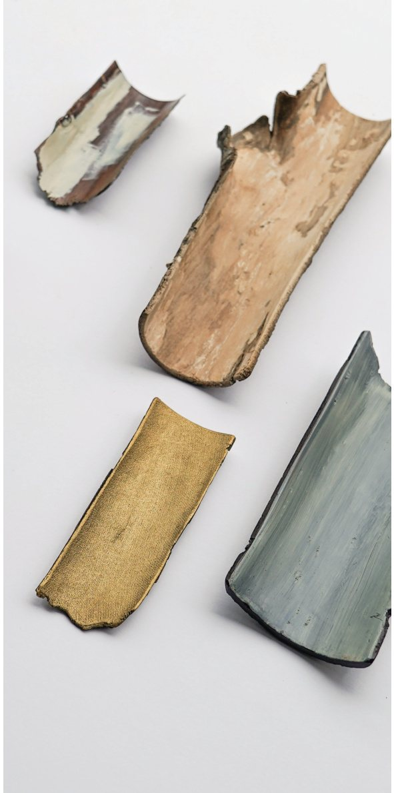
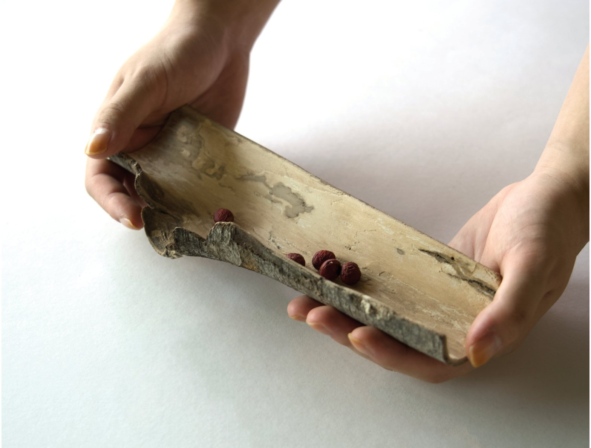

Buildings went up on the hill behind my studio, and a lot of trees came down. Of everything thrown out, the bark counted as the most useless of all.
But the years a tree has lived stay in its bark exactly as they were, and the lacquer keeps them there a while longer. Use it as a chaha (茶荷) for dry tea leaves, or as a rest for a spoon and fork — somewhere to set down the time of an ordinary day.

From 4 × 10 × 2 cm, following the wood. Cherry bark, zelkova bark and others. Urushi lacquer or oil.
As each piece is carved by hand, dimensions may vary. Slight differences in colour and form are the character of each individual wood.